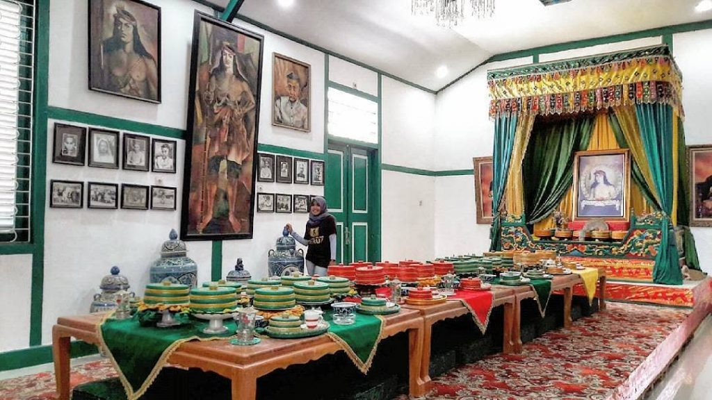
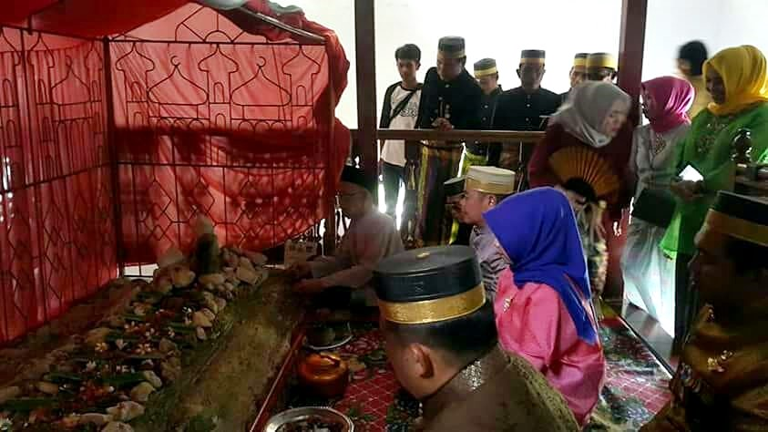
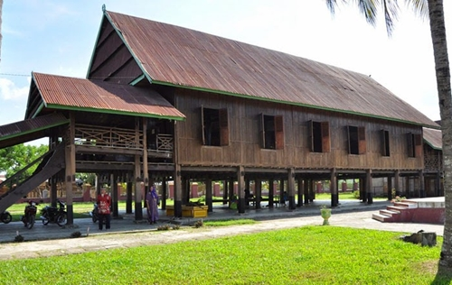
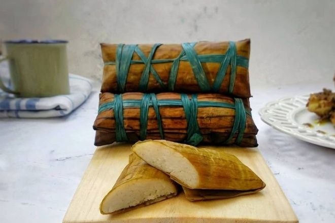
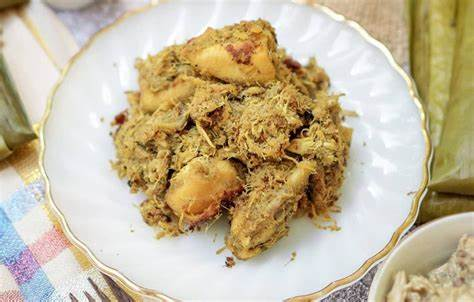
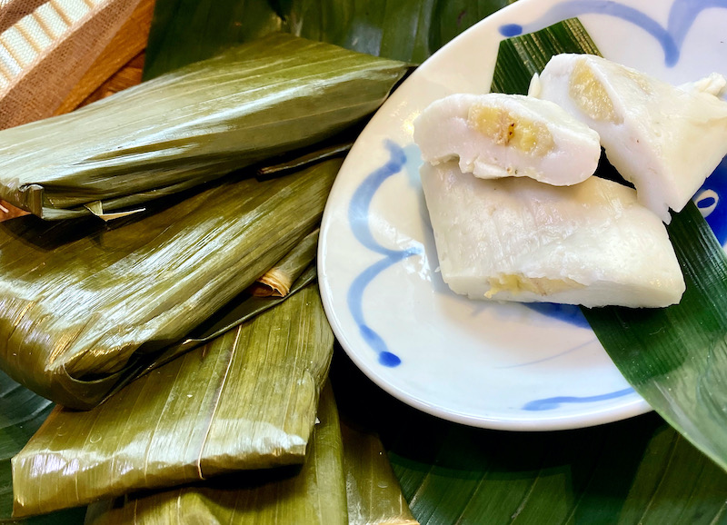

Suku Bugis adalah salah satu suku yang mendiami wilayah Sulawesi dan kabupaten Bone sering dianggap sebagai pusat dari peradaban Suku Bugis. Kabupaten Bone terletak sekitar 174 km sebelah timur kota Makassar dengan luas wilayah 4.559 km2. Di sebelah utara kabupaten ini berbatasan dengan kabupaten Wajo, sebelah selatan dengan Sinjai, timur denga teluk Bone dan barat dengan kabupaten Maros.
Sejarah Suku Bugis Bone
Menurut sejarah yang ada, kabupaten Bone berawal dari masa kejayaan Kerajaan Bone yang dulu sangat terkenal di nusantara. Bersama kerajaan dengan Gowa-Tallo, kerajaan Bone turut mewarnai sejarah panjang nusantara kala itu. Selain Bone, ada lagi kerajaan yang lain seperti kerajaan Soppeng, kerajaan Wajo dan juga Siang yang juga termasuk dalam etnis bugis.
Kejayaan kerajaan Bone mencapai puncaknya pada abad ke 17 pada masa pemerintahan Raja Bone XV La Tenri Tatta Daeng Serang Petta Malampe’e Gemme’na. Di dalam naskah lontara disebutkan sebagai berikut: riwettu puatta Malampe’e Gemme’na paoppang palengngengi tana Bone, Bone wettuero kutosaba keteng, tepu seppulo lima yang berarti: pada saat Bone dipimpin oleh La Tenri Tatta Daeng Serang Petta Malampe’e Gemme’na, maka Bone pada saat itu seumpama bulan, sempurna bentuknya.
Pada tahun 1905 Kerajaan Bone jatuh ke tangan Belanda dan terbentuk pemerintahan sendiri (Zelf bestur) di bawah pengawasan Belanda. Selanjutnya pada masa pemerintahan Raja Bone XXXIII La Pabbenteng Petta Lawa Sultan Muh. Idris Matinroe Ri Matuju sistem kerajaan diubah mengikuti sistem pemerintahan Republik Indonesia.
Tempat Bersejarah di Kabupaten Bone
Museum Lapawawoi

Museum Lapawawoi dinamakan demikian karena merujuk pada nama Raja Bone ke 31 yang memerintah dari 1895 – 1905, lengkapnya La Pawawoi Karaeng Sigeri. Dahulu, museum ini merupakan istana (Saoraja) Raja Bone. Ia menyimpan banyak peninggalan Kerajaan Bone. Salah satu koleksi yang ada di museum ini adalah La Ummasa Petta Mulange Panre, yang merupakan landasan untuk menimpa besi yang biasa dipakai oleh Raja Bone Kedua.
Makam Raja Bone

Salah satu makam yang bisa dikunjungi saat bertandang ke Bone, adalah makam Raja Bone ke XVI, Lapatau Matanna Tikka. Situs makam ini biasa juga dikunjungi oleh petinggi-petinggi Bone.
Bola Soba

Bola Soba dibangun pada masa pemerintahan Raja Bone ke-30, La Pawawoi Karaeng Sigeri, sebagai tempat tinggal raja. Sayangnya, ketika Belanda mulai masuk ke Indonesia, bangunan ini jatuh ke tangan Belanda dan berubah fungsi menjadi penginapan untuk menjamu para tamu mereka. Bola Saba memiliki panjang 39,45 meter. Terdiri atas empat bagian utama: teras, rumah induk, selasar penghubung dan ruang dapur.
Patung Arung Palakka
Bagi masyarakat Bone, Arung Palakka bukan nama yang asing. Ia adalah putra mahkota Bone yang kontroversial. Tokoh ini lahir pada 15 September 1634. Ia merupakan putra Raja Bone ke-XIII, La Maddaremmeng Matinro’e Ri Bukaka. Meski begitu, bukan berarti hidupnya mudah. Aru Palaka lahir di antara konflik kerajaan yang tengah terjadi di Sulawesi Selatan
Makanan Khas Bugis Bone
Burasa

Burasa adalah makanan khas masyarakat Bugis mirip lontong namun bahan-bahan yang digunakan berbeda, yakni beras yang dicampur dengan santan, dibungkus dengan daun pisang biasanya dua lapis dan dikukus. Satu ikat terdiri dari 2-5 Burasa. Teksturnya yang lembut dan rasa yang gurih sangat cocok dipadukan dengan lauk pendamping apapun.
Nasu Likku atau Nasu Poppo

Bahan utama hidangan ini adalah ayam dan lengkuas, seperti namanya (nasu: masak; likku; lengkuas). Nasu likku dibuat dengan berbagai macam rempah dan santan dimasak bersama ayam selama beberapa jam hingga bumbunya meresap. Masakan ini biasanya disajikan ketika Lebaran dan dimakan bersama Burasa.
Bandang-Bandang

Selanjutnya kue yang mirip dengan Nagasari namun di Bone kita memanggilnya Bandang-Bandang, salah satu kue tradisional. Terbuat dari tepung beras, santan, gula dan lain-lain, di dalamnya ada pisang dan dibungkus daun pisang lalu dikukus.